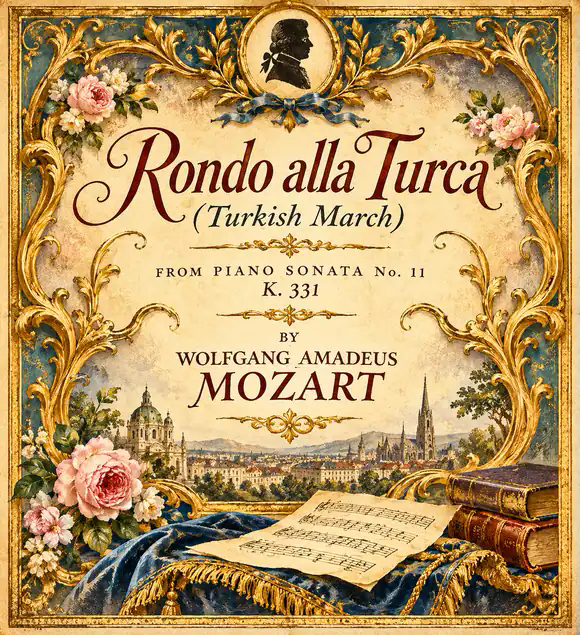

Rondo alla Turca
Wolfgang Amadeus Mozart (1756–1791) · Turkish March · Final movement of Piano Sonata No. 11 in A major, K. 331. Published in Vienna in 1784.
Everything here is free. Listen, read, print, and download the complete five-page piano score. Mozart’s original composition and the selected engraving are in the public domain. Ophelia’s Rococo-inspired cover is new artwork, not an antique facsimile.
Ophelia’s Classical-era cover

Free sheet music · five pages
Score and credits: Wolfgang Amadeus Mozart, Rondo alla Turca, K. 331, third movement. Complete piano notation typeset by Rune Zedeler and Chris Sawer, published by the Mutopia Project and placed in the public domain by its typesetters. The work is not simplified or abridged. If the preview is blank, use the free PDF link above; the Google viewer remains an optional alternative.